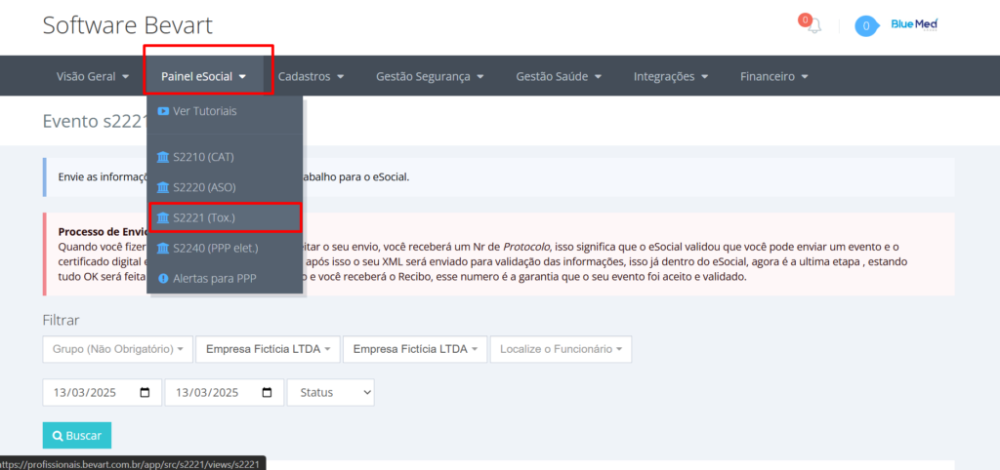
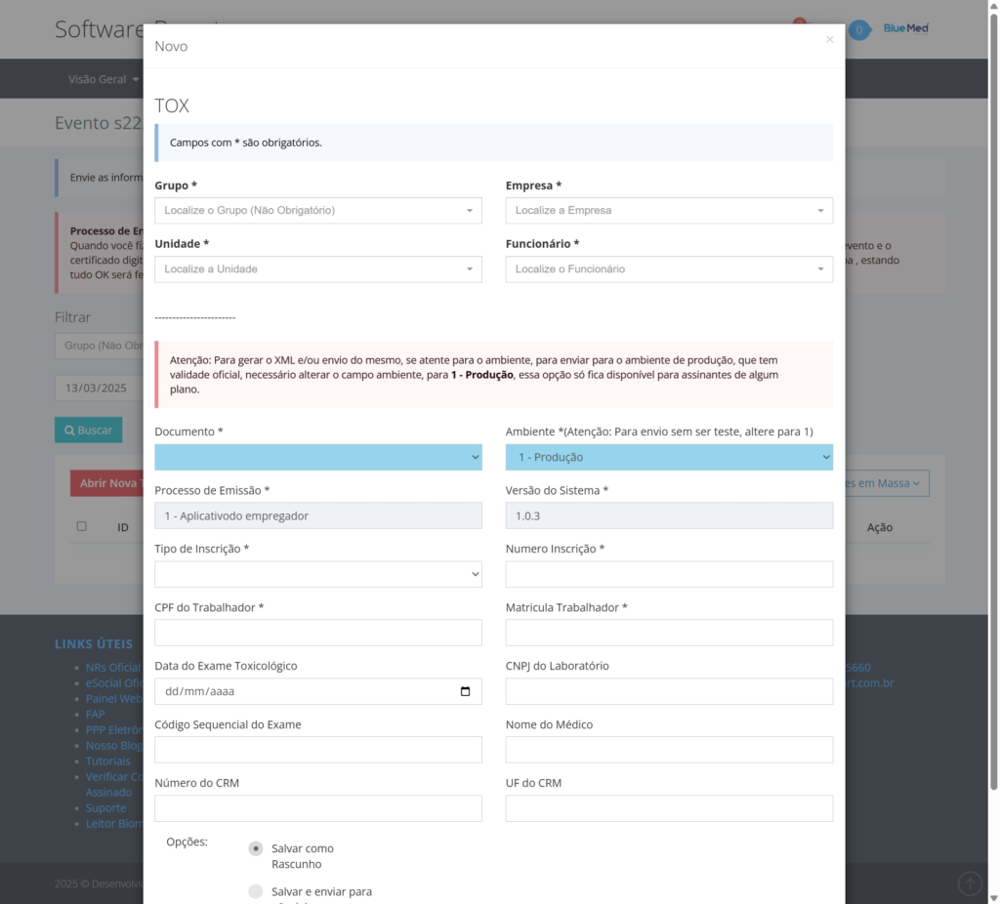

Envio do evento toxicológico S-2221 no eSocial com o Bevart
O exame toxicológico do motorista profissional tem evento próprio no eSocial. Veja onde ele fica no sistema, quais campos o layout exige e o que fazer quando o envio volta com erro.

O essencial em 30 segundos
- O S-2221 informa ao eSocial o exame toxicológico do motorista profissional — é evento separado do S-2220, que trata do monitoramento da saúde.
- No Bevart ele fica em Painel eSocial → S-2221, com opção de gerar o XML ou transmitir direto.
- O campo Ambiente precisa estar em "1 – Produção" para o envio ter validade oficial. Em teste, o evento não vale.
Quem tem motorista profissional na folha convive com um evento que não aparece nas listas resumidas de SST: o S-2221, do exame toxicológico. Ele não substitui nem se mistura com o S-2220 — é um evento próprio, com layout próprio, e costuma ser lembrado tarde, quando a admissão já aconteceu.
O envio em si é simples. O que trava, na prática, é reunir os dados do laboratório e do médico examinador na hora certa. Abaixo, o caminho completo dentro do Bevart.
O que o S-2221 informa
O evento registra a realização do exame toxicológico com efeito legal para o vínculo do motorista profissional. Ele carrega, em resumo:
- identificação do trabalhador (CPF e matrícula);
- data do exame toxicológico;
- CNPJ do laboratório que realizou;
- código sequencial do exame;
- nome, CRM e UF do médico examinador.
Como todo evento periódico de SST, ele é transmitido depois da realização do exame — não deixe para juntar a papelada no fim do prazo, porque o dado que costuma faltar (código sequencial e CNPJ do laboratório) depende de terceiro.
Passo 1: abrir o painel do evento
Entre no sistema e vá em Painel eSocial. Na lista de eventos, clique em S-2221.

Passo 2: criar o envio
Na tela do evento, clique em Abrir Nova Tox. O formulário já vem organizado na ordem em que o layout pede, e a maior parte dos campos é preenchida por seleção — grupo, empresa, unidade e funcionário saem do cadastro que você já tem.

Ambiente. Para o envio ter validade oficial, ele precisa estar em 1 – Produção. Enviado em ambiente de teste, o evento é processado, aparece como concluído e não vale nada perante o eSocial — o erro só aparece quando alguém confere a malha meses depois.
Passo 3: gerar o XML ou transmitir
Com os campos preenchidos, você escolhe entre gerar o XML do evento — útil quando o envio é feito por outro caminho ou quando o contador quer conferir antes — e salvar e transmitir direto ao eSocial. Clicando em salvar, o processamento segue automático.
O evento nasce do dado que já está no sistema
Empresa, unidade e funcionário vêm do cadastro; o certificado digital já está configurado. Você preenche o que veio do laboratório e transmite.
Criar conta grátisPasso 4: conferir o status e corrigir erro
No painel do S-2221 você filtra por empresa e vê o que foi transmitido com sucesso. Quando algo volta com erro, o botão Log mostra o retorno do eSocial — normalmente um campo fora do formato ou divergência de cadastro. Corrija e envie de novo pelo mesmo painel.
Antes de transmitir em lote, confira CPF e matrícula contra o vínculo ativo. A maior parte dos erros de retorno em eventos de SST não é do exame: é de cadastro que mudou depois que o dado foi digitado.
Por que fazer por dentro do sistema
- Menos digitação: os dados do trabalhador vêm do cadastro, não de planilha.
- Menos erro de formato: os campos já saem no formato que o layout espera.
- Rastro do envio: status e log ficam no mesmo lugar, com histórico por empresa.
- XML disponível: quando você precisa entregar o arquivo a alguém, ele está a um clique.
Se o que você precisa é o panorama dos outros eventos de SST, vale ler também o guia dos eventos S-2210, S-2220 e S-2240.
Perguntas frequentes
O S-2221 substitui o S-2220?
Não. O S-2220 trata do monitoramento da saúde do trabalhador, com o ASO e os exames que o embasaram. O S-2221 é específico do exame toxicológico do motorista profissional e tem layout próprio. Um não dispensa o outro.
Enviei em ambiente de teste. O que acontece?
O evento é processado, mas não tem validade oficial. É preciso refazer o envio com o campo Ambiente em "1 – Produção". Por isso vale conferir esse campo antes de transmitir em lote.
Preciso do certificado digital para enviar?
Sim. A transmissão ao eSocial exige certificado digital válido configurado para a empresa transmissora, ou procuração eletrônica que autorize o envio em nome dela.
O que fazer quando o envio volta com erro?
Abra o Log do envio no painel do evento: o retorno do eSocial indica o campo problemático. Corrija o dado na origem, salve e transmita novamente pelo mesmo painel.